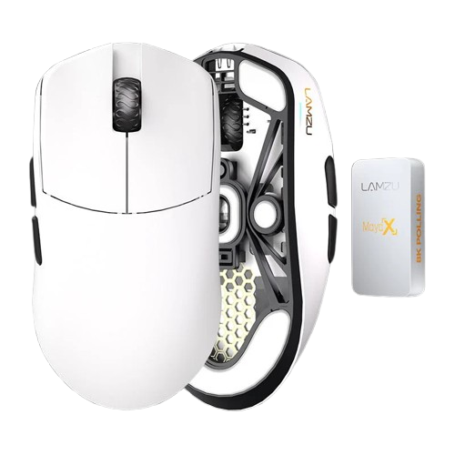
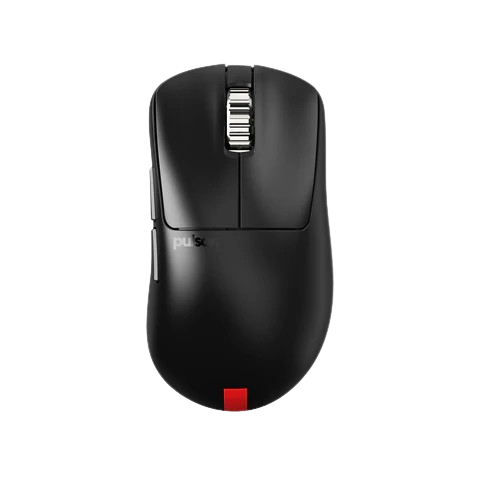

Bienvenido a GGMouse
Encuentra los mejores ratones para gaming y optimiza tu rendimiento.
 ¿Cuál es tu tipo de agarre?
Antes de elegir tu ratón ideal, es importante conocer cómo lo sostienes.
Palma, garra o dedos: cada agarre influye en la comodidad y precisión de tu juego.